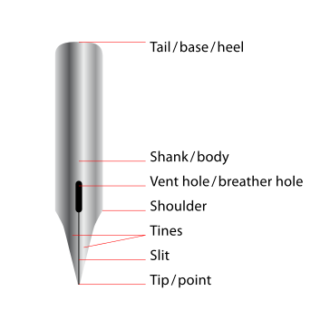
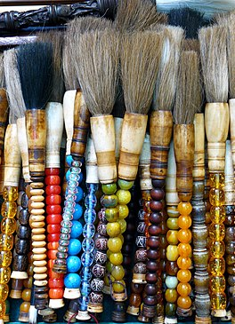

tools for calligraphy
Pens and Brushes
The principal tools for a calligrapher are the pen and the brush. Calligraphy pens write with nibs that may
be
flat, round, or pointed.For some decorative purposes, multi-nibbed pens—steel brushes—can be used. However,
works have also been created with felt-tip and ballpoint pens, although these works do not employ angled
lines.
There are some styles of calligraphy, such as Gothic script, that require a stub nib pen.
Common calligraphy pens and brushes are:
- Quill
- Dip pen
- Ink brush
- Qalam
- Fountain pen
- Chiseled marker


Inks, Papers, and Templates
Writing ink is usually water-based and is much less viscous than the oil-based inks used in printing. Certain
specialty paper with high ink absorption and constant texture enables cleaner lines, although parchment or
vellum is
often used, as a knife can be used to erase imperfections and a light-box is not needed to allow lines to pass
through it. Normally, light boxes and templates are used to achieve straight lines without pencil markings
detracting from the work. Ruled paper, either for a light box or direct use, is most often ruled every quarter
or
half inch, although inch spaces are occasionally used. This is the case with college-ruled paper often acts as a
guideline well.